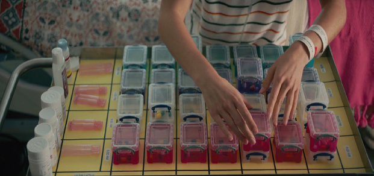
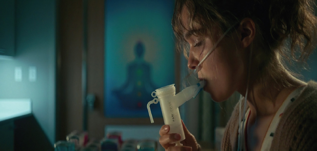
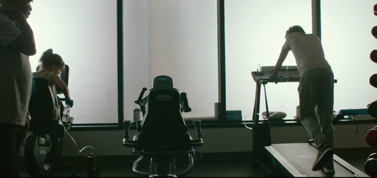
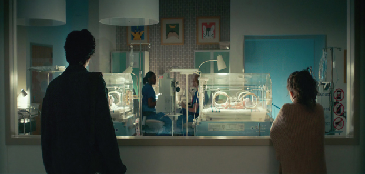

La pel·lícula, A dos metros de ti, està ambientada en un hospital on es visualitza les diferents facetes mèdiques de la FQ tant a la vida personal com familiar. Avui dia, el cinema constitueix un recurs útil al camp de l'educació mèdica, ensenyant-nos els aspectes més rellevants en diversos contextos de la vida del pacient.
A continuació, analitzarem les fortaleses de la pel·lícula A dos metros de ti, a cadascuna d'aquestes funcions:
Foto 1. Medicaments que formen part del control de la malaltia de Stella. Dins aquest grup hi ha el suc G, un suplement nutritiu.La FQ es caracteritza per l'acumulació excessiva de secrecions espesses i viscoses a l'epiteli de l'aparell respiratori i del tracte digestiu. Això desenvolupa una malaltia crònica i rogressiva de l'aparell respiratori, la insuficiència pancreàtica i les alteracions hepatobiliars
Foto 2. La Oxigenoteràpia a llarg termini ajuda al temps de supervivència dels pacients amb concentracions d'oxigen molt baixes, a més a més aporta energia als altres teixits
Foto 3. Part del tractament és l'exercici físic, s'aprecia Stella i Will al gimnàs compartint la mateixa rutina A la pel·lícula s'observen escenes molt significatives sobre l'inici de la vida (Foto 4), que les relacionem amb el fet que és una malaltia congènita d'herència autosòmica recessiva. S'estima que 1/2000 i 1/6000 nadons són diagnosticats amb FQ. A més, les probabilitats que els pacients amb FQ tinguin descendència són molt baixes.
Foto 4. Stella i Will observant els nadons. En un de cada 5000 naixements hi ha un cas de FQ En dones embarassades es recomana el diagnòstic prenatal per identificar i analitzar la presència de les diferents mutacions causants de la FQ.
Enllaç de la pel·lícula